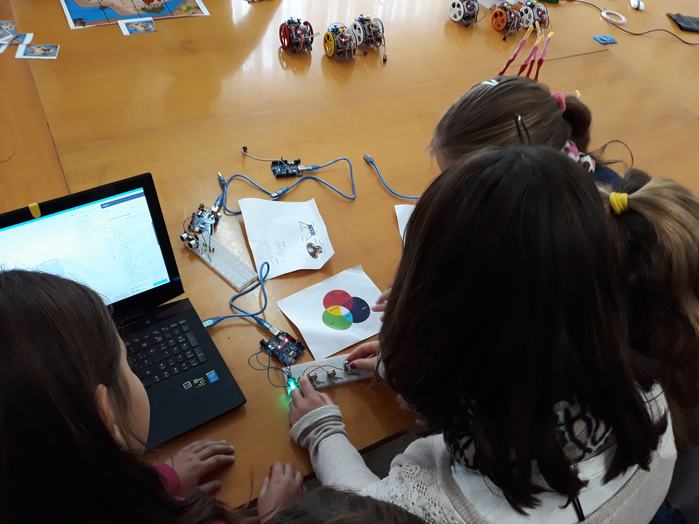

ASOCIACIÓN educatech

Educatech es una asociación sin ánimo de lucro cuyo objetivo fundamental es promover el desarollo de la electrónica, la programación, la robótica y la impresión 3D desde edades tempranas a través de talleres prácticos y mediante charlas informativas.
Actividades CODE-WEEK 2021
Por Educatech
Publicado el 25 de Septiembre de 2021
Programa MEET AND CODE, ¿Qué es?
El objetivo de MEET AND CODE es introducir a niñas, niños y jóvenes, entre los 8 y 24 años, el mundo de la tecnología y la programación. Los eventos están diseñados para mostrar a los jóvenes lo divertida que puede ser la programación y cómo puede ayudar a que las ideas cobren vida. Aprenderán cómo funciona la tecnología y cómo las TI afectan nuestras vidas diarias. Al explorar una amplia gama de temas tecnológicos, digitales y desarrollando una programación creativa, se les animará a desarrollar las destrezas digitales que necesitan en el mundo de hoy.
¿Cúando?
La EU Code Week, se celebrará del 9 al 24 de Octubre del 2021, basandose en una idea de los Young Advisors, un grupo asesor de la antigua Comisionada de la UE para la Agenda Digital, Neelie Kroes, y cuenta con el respaldo de la Comisión Europea. La iniciativa MEET AND CODE promueve eventos relacionados con la ciencia y la tecnología de todo tipo en el contexto de la EU Code Week, pudiendo asignar 500 € de subvención como ayuda para hacer evento. En nuestro caso, un evento de los tres que vamos a desarrollar, está subvencionado por la iniciativa MEET AND CODE.
Pioneras, el papel de la mujer en la ciencia y la tecnología y cómo tú puedes cambiar el futuro.
Descripción
Desde la Prehistoria, pasando por el campo de la botánica y la medicina, y recorriendo los distintos avances en el campo de la electricidad, la programación, o los viajes al espacio, las mujeres han tenido una labor vital, que en ocasiones ha quedado en un segundo plano.
En este evento se pretende dar visibilidad al papel de la mujer en la historia de la ciencia y la tecnología desde la Prehistoria hasta la actualidad, destacando los avances descubiertos por ellas y gracias a los cuales podemos disfrutar del uso de nuestros smartphones, internet o simplemente hacernos una radiografía.
A lo largo de este evento en formato MOOC, también se aprenderán los conceptos básicos del campo de la robótica (historia de la robótica, partes de un robot, funcionamiento y utilidades), la electrónica (la electricidad, circuitos y componentes), la física (mecánica y leyes básicas) y la programación; los cuales serán útiles para despertar el interés por las disciplinas STEAM entre las y los jóvenes, que disfrutarán finalmente de una sesión práctica (a distancia) en la que realizarán distintas actividades con las placas Micro:bit mediante unos kits que recibirán a modo de préstamo.
Code4Nature
Descripción
La naturaleza tiene una unión innegable con las nuevas tecnologías. En los últimos años, la subida del nivel del mar, el aumento de catástrofes climáticas o la cantidad de lluvia que disminuye dando como resultado grandes periodos de sequía. En estas situaciones, las científicas y científicos emplean multitud de dispositivos electrónicos para medir, comparar y obtener datos, y así analizar cómo podemos mejorar y qué debemos cambiar.
La ciencia, en este caso la programación, juega un papel vital, ya que permite obtener resultados cada vez más precisos gracias a los avances técnicos, pudiendo comparar la evolución de los efectos negativos del cambio climático.
A lo largo de este evento, los jóvenes asistentes (de forma remota) se acercarán a la realidad medioambiental en la que nos encontramos y que se evidencia en el entorno más próximo, aprendiendo que acciones pueden mejorar el futuro del planeta evitando que el cambio climático se acentúe con el paso del tiempo.
Además, en este evento las niñas y niños aprenderán a construir un pluviómetro digital con Makey Makey; programándolo en Scratch y reflexionando cómo la lluvia ha disminuido en los últimos años, en base a datos reales.
YourMagicWorld
Descripción
La naturaleza tiene una unión innegable con las nuevas tecnologías. En los últimos años, la subida del nivel del mar, el aumento de catástrofes climáticas o la cantidad de lluvia que disminuye dando como resultado grandes periodos de sequía. En estas situaciones, las científicas y científicos emplean multitud de dispositivos electrónicos para medir, comparar y obtener datos, y así analizar cómo podemos mejorar y qué debemos cambiar. En la actualidad, los jóvenes han perdido el interés por la lectura, aumentándolo por los videojuegos y otras tecnologías emergentes que crean en mucha de las ocasiones eventos de adicción, como la ciberadicción.
En este evento los jóvenes se acercarán a las nuevas tecnologías (programación) mediante la creación de distintas manualidades con materiales reciclados, relacionando todas las actividades con algún libro de la literatura infantil clásica.
Los objetivos principales de este evento son conseguir animar a los jóvenes por la lectura a la vez que se les inicia en el campo de la programación mediante actividades amenas en las que interactuarán con las placas Micro:Bit.
Dado su carácter, este evento en línea está destinado a jóvenes que aún no han tenido contacto con la programación o bien sus conocimientos son elementales, siendo ideal para que los más pequeños de la casa puedan aprender junto a sus familiares, a la vez que mejoran su capacidad lectora y se animan por la literatura.
Pulsa aquí para acceder a la página de la iniciativa MEET AND CODECopyright © 2018 Educatech NÚM 12566 sección 1 del Registro de Asociaciones de Andalucía
Diseñado por TemplateWire y modificado por Educatech

|

|

|
|
|